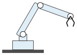
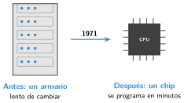

La robótica industrial y la era del microprocesador
🤔 Pienso5 min
Qué hago aquí: Piensa un momento y contesta con lo que ya sabes. No pasa nada si no lo sabes: es para empezar.
En una fábrica de coches hay que: soldar piezas muy calientes, pintar con productos tóxicos, levantar puertas pesadas y revisar que todo esté bien. ¿Qué trabajos dejarías a una máquina? ¿Por qué?
📖 Leo y aprendo20 min
Qué hago aquí: Lee despacio, mira los dibujos y los ejemplos, y quédate con la idea clave del final.
En 1961 empezó a trabajar el primer robot industrial. Se llamaba Unimate. Era un brazo enorme que sacaba piezas de metal al rojo vivo en una fábrica de coches de Estados Unidos.

Los primeros robots eran difíciles de programar. En 1971 llegó el microprocesador: un ordenador entero en un chip pequeño.

✏️ Hago20 min
Qué hago aquí: Haz las actividades en orden. Empieza siempre por las básicas.
¿Cómo se llamaba el primer robot industrial? ¿En qué año empezó a trabajar?
Escribe dos tareas de una fábrica que haga bien un robot.
El microprocesador, ¿qué parte del sistema de control es: entrada, controlador o salida?
Escribe una ventaja y un inconveniente de usar robots en una fábrica.
✏️ Puedes responder escribiendo, con un dibujo o un esquema, o contándolo en voz alta.
🚀 Amplío (si quieres saber más)
Qué hago aquí: ¿Has terminado? Lee la curiosidad o elige el reto. Es voluntario.
En Cantabria hay fábricas con robots. Busca una y escribe qué fabrica y qué tarea hace un robot allí.
✅ Compruebo5 min
Qué hago aquí: Contesta sin mirar la ficha y marca cómo lo llevas.